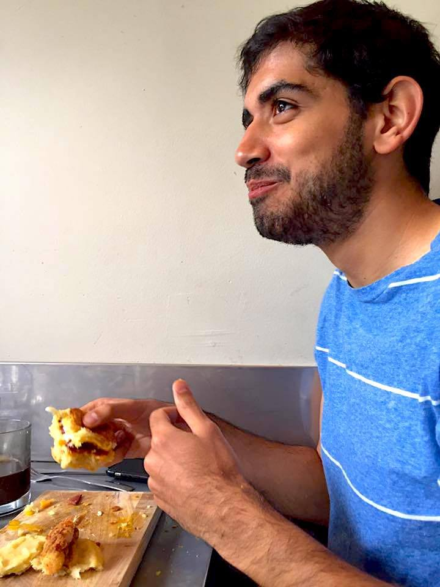

About Me
I am currently a student in the Northwestern Coding Boot Camp, learning the ropes of web design.
I have worked as a copy editor and print designer for the Chicago Tribune since 2014.
I grew up in St. Louis, Mo., and earned a bachelor of journalism degree from the Missouri School of Journalism at the University of Missouri.
My goal is to create interactive presentations for news products that meet the needs of today's consumers.
I have loved biscuits from a young age.
Connect with me